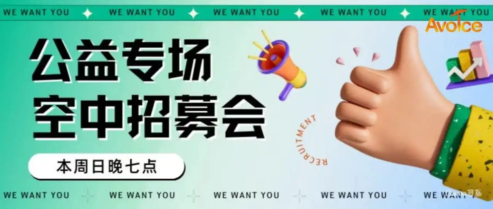
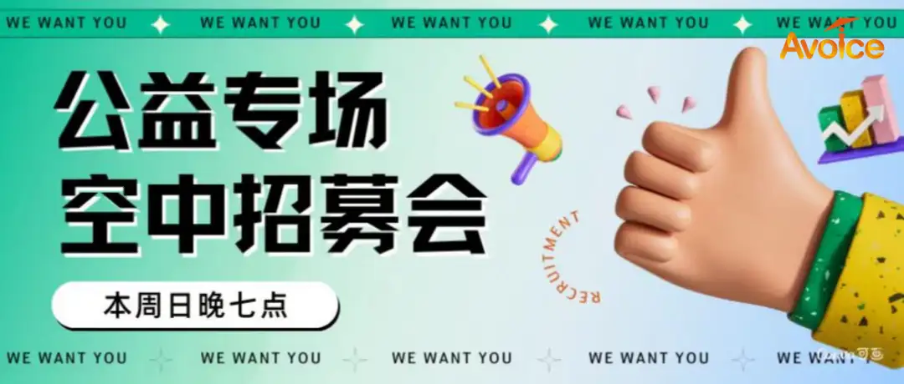
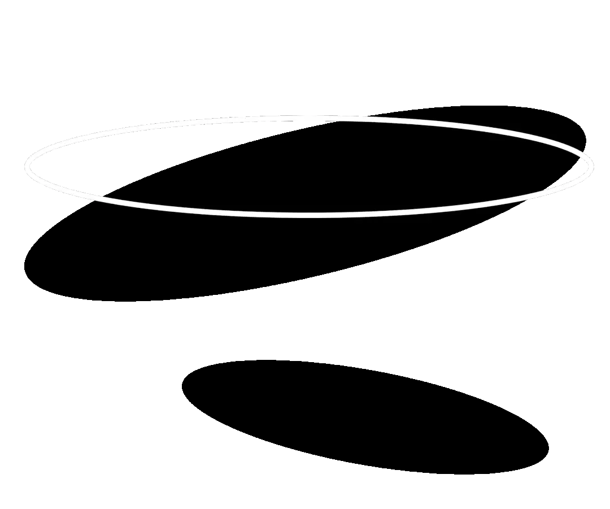
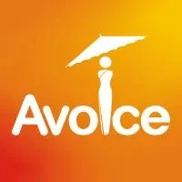
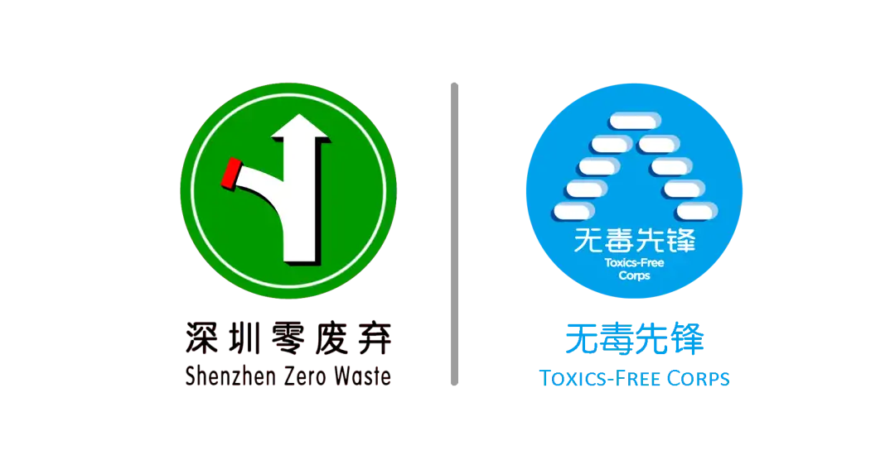
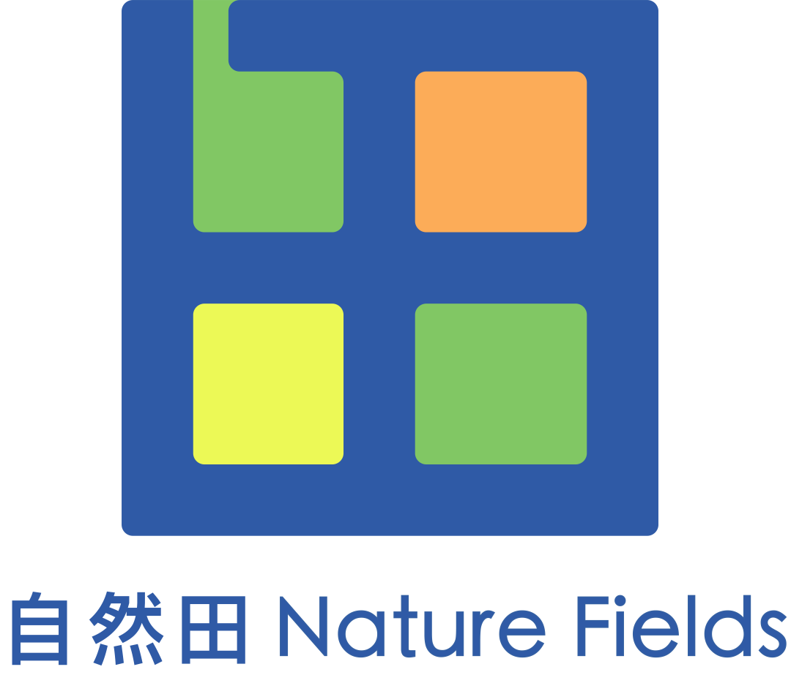
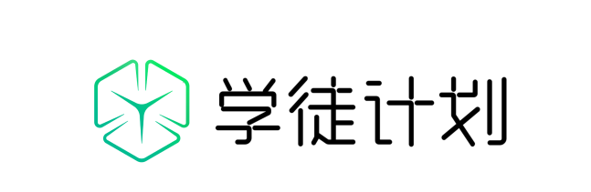
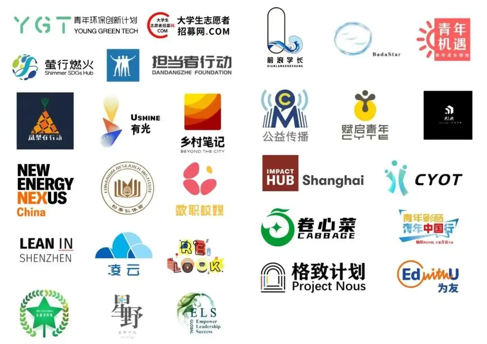
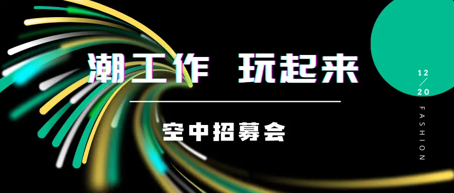

疫情和严酷经济形势之下，青年人的职业之路就只剩被动内卷后的焦虑和茫然吗？
社交媒体吹捧的多金行业和blingbling名企title，是否真是你志趣所在心之所往？
或许看不清自己的你，也需要一段静下心来的内向探索，问问自己，你究竟想要什么？
█████
那么，欢迎你来到公益行业！
和一群志同道合的小伙伴
在关注解决社会议题
亲手推动世界更美好的过程中
向内挖掘自己的价值
找到前行的道路
还有什么比这
更适合仰望星空，脚踏实地的你呢？
空中
招募会
本周日（1.15）晚7点
学徒计划邀请到
Avoice海外华人女性保护项目、无毒先锋、上海多阅公益文化发展中心、自然田naturefields四家公益组织进行线上宣讲。
全职/实习/志愿者多款岗位等你来选
线上线下地点灵活
快戳文末见参与方式

01

Avoice 海外华人女性保护项目致力于消除性别暴力、促进性别平等，为面临家暴威胁的海外华侨华人女性提供充分、持续的保护和救助。
项目通过与政府部门、海外华人组织、社会组织、行业专家等建立合作网络，联合更广泛的青年公益力量，倡导公众对海外华人女性生活困境的关注和支持，为她们创造安全、平等的生存和发展环境，帮助她们从家庭暴力的受害者，成长为推动性别平等与保护弱势群体的倡导者和实践者。
招募岗位：
宣传处多岗位志愿者
传播顾问
02

无毒先锋是深圳市零废弃环保公益事业发展中心（简称深圳零废弃）发起的一项旨在促进化学品安全与公共健康的公益行动。
它主要通过独立检测、科普传播和企业倡导等活动，促进消费品中有害化学物质的严格管控，使公众远离健康风险。它同时致力于与社会各界合作，共同推动化学品健全管理的制度建设和行业实践。
招募岗位：
产品去毒倡导实习生
科普实习生
政策研究实习生
03
上海多阅公益文化发展中心是一家专注在阅读推广领域的专业公益机构，旗下有书香城市建设、苗苗阅读、多阅阅读桥三大品牌项目。多阅的使命是让中国有更多终身阅读者，用阅读为教育搭桥、为文化点灯、为思想开门。
多年来已经在上海建立了从政府、图书馆、出版社、专家学者到民间组织的广泛阅读合作生态，受到了央视、央广、解放日报、青年报、上海电视台等多家媒体报道。
招募岗位：
流动/乡村儿童教育公益研究评估全职
书香社区营造全职
品牌支持全职
公益筹款全职
流动/乡村儿童教育公益研究评估实习生
儿童阅读公益研发实习生
阅读活动策划实习生
公共动员实习生
04

自然田成立于2019年，是一家关注大气和土壤生态环境治理议题的非营利机构，使命是关注被忽视的生态环境问题，愿景是蓝天白云空气好，瓜果蔬菜自然甜。目前开展的倡导行动有清洁港口空气、煤电降碳减污、农药及其包装废弃物减量。
招募岗位：
环境保护/气候变化信息分析实习生
想了解招募岗位要求？
想和各组织招募负责人沟通招募详情？
那就不要错过
本周日公益行业专场空中招募会！
Q
如何参加学徒计划空中招募会？
A
扫描下方二维码，即可加入青年职业成长社群，获取直播间链接！
（已在社群的小伙伴不必重复进群哦）
招募会主办方

学徒计划由YGT青年环保创新计划和星展中国联手数十位中国最优质的绿色创新企业创始人、职业核心素养发展专家共同发起，是一个致力于赋能青年人职场发展的项目。今年夏天，我们为数百位来自世界各地名校的优秀学子免费提供职业核心素养培训，并将他们送往国内顶尖的社会企业中进行免费实践实习，获得新华社、爱奇艺、百度等多家媒体报道。
联合传播方

往期招募会
